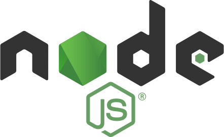
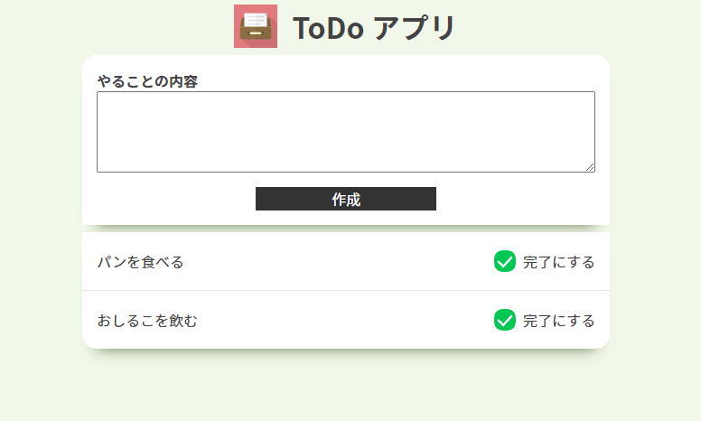

Portfolio
Self-Introduction
自己紹介
岡本 南美
おかもと みなみMinami OKAMOTO
立命館大学 情報理工学部 画像・音メディアコース ３年生
自己紹介
はじめまして、岡本南美 といいます。このサイトは私の趣味やスキルなどを紹介するポートフォリオです。 このポートフォリオが、Web の 初めての制作物です。どうぞご覧ください。
重要このページは Web 制作の学習のためのページです。
Hobby
趣味
もの作りと音楽鑑賞が趣味です。私が今まで制作した作品です。
最近はナノブロックにハマっています。
スノードーム

キーホルダー

ナノブロック

Skill
スキル
HTML / CSS
1年
Web のフロントサイドの言語です。
大学の講義でも習いましたが、学習サイト等で学び直し
ポートフォリオサイトを作成しました。

JavaScript / Node.js
1年
Web 系で最も有名な言語です。
フロントサイドでは、動きのある動作を作るために使用しました。
Node.js は、ビルドに使用したことがあります。 TypeScript
も合わせて勉強しています。
 PHP
1年
PHP
1年
Web のサーバーサイドの言語です。Laravel というフレームワークで
データベースを操作する、アプリケーションを制作しました。
C言語
2年
大学の講義で学習しました。 パターン認識等を行いました。
Adobe CC Illustrator
3か月
イラスト描画のためのドロー系ソフトウェアです。
アニメーション動画の制作のときに使用しました。
Adobe CC Premiere Pro
3か月
映像編集ソフトです。
アニメーション動画の制作のときに使用しました。
Adobe CC After Effects
3か月
映像作成ソフトです。四角や丸のオブジェクト（パーティクル）を使用すると
全く何も素材がないところから、1本の動画を作ることができて楽しいです。
アニメーション動画の制作のときに使用しました。
My Work
制作物
1. ポートフォリオサイト
現在表示しているサイトです。 学習サイトを参考にしながら、自分の紹介を作成しました。初めて自分の手でWeb ページを作成することを知りました。
こだわりポイント-
配色やわらかい印象を持っていただけるように、ベースとなる色を、 色の参考書から3色選択し、使用しました。
-
ナビゲーションスマートフォン等、小さい画面で見たときに、セクションの移動が 簡単にできるように、メニューを上部に固定しました。 スクロールするまでは、ページの一部になるようにする部分に苦戦しました。
-
レスポンシブレイアウト画面幅に応じてレイアウトが変わるようにし、崩れないように細かい部分まで調整しました。
- HTML / CSS
- JavaScript
- Swiper (画像スライドショー)
2. 匿名掲示板
サーバーサイドの練習のために、 誰でも利用可能な掲示板を作成しました。 書き込みをデータベースに保存し、他のユーザーからも閲覧できるようにしました。
こだわりのポイント-
投稿内容自由なニックネームと投稿内容の 2 つだけのシンプルな構成です。
-
コンテナ化Docker で PHP と MySQL を実行できるように構成しました。
-
ログイン機能誰でも削除できてしまうため、ログイン機能やパスワード保護機能で投稿を管理できるようにしたいです。
- HTML / CSS
- PHP
- MySQL
- Docker
3. To Do アプリ

PHP フレームワークの Laravel を使用して To Do アプリを作成しました。 ログイン機能があり、ユーザーごとにタスクを管理できます。 シンプルな Web アプリケーションですが、初期生成されたファイルが多く、大変でした。
使用した言語・ツール等- HTML / CSS
- PHP
- Laravel
- MySQL
- Docker